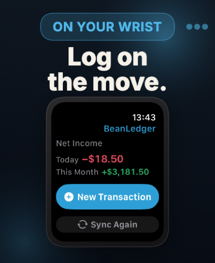

Record income, expense, transfer, and investment transactions with a calculator-style amount input and reusable account structure.
Personal finance, refined for Apple devices
BeanLedger
Keep your daily money, assets, charts, multi-currency accounts, widgets, and Apple Watch entries in one local-first ledger. No sign-in. No ads. No backend.
On-device data
iCloud sync
iPhone, iPad, Apple Watch
Everyday ledger, full asset picture
Your books stay clear without becoming work.
BeanLedger keeps entry fast while preserving the structure needed for accounts, categories, refunds, recurring plans, investment summaries, and long-term asset review.
Track native balances, exchange rates, and local-currency summaries across cash, cards, savings, and investment accounts.
Review asset Sankey flows, net worth K-line trends, income and expense comparisons, category breakdowns, and map memories.
Prepare recurring transactions and recurring To-Do plans, then let optional notifications keep upcoming work visible.
Watch and widgets
Capture and glance without opening the app.
Apple Watch entry, complications, Home Screen widgets, Lock Screen widgets, Control Center quick capture, and Siri shortcuts keep small financial moments close to where they happen.

Trust and privacy
No BeanLedger server between you and your money.
BeanLedger stores data locally on your devices and syncs through your own iCloud account. There is no BeanLedger account system, no ad profile, and no third-party analytics script on this page.
Your records begin on your device, with iCloud used only for syncing across your Apple devices.
Automatic backups and restore support help keep long-term financial history recoverable.
Open the app and start. BeanLedger does not require a separate web account.
Screenshots
A ledger that stays readable at daily speed.
The same native app experience appears in App Store screenshots, on the device, and in the quick surfaces you use throughout the day.